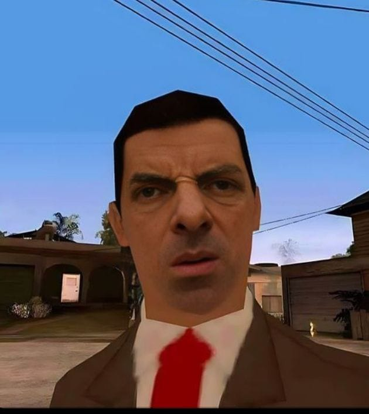
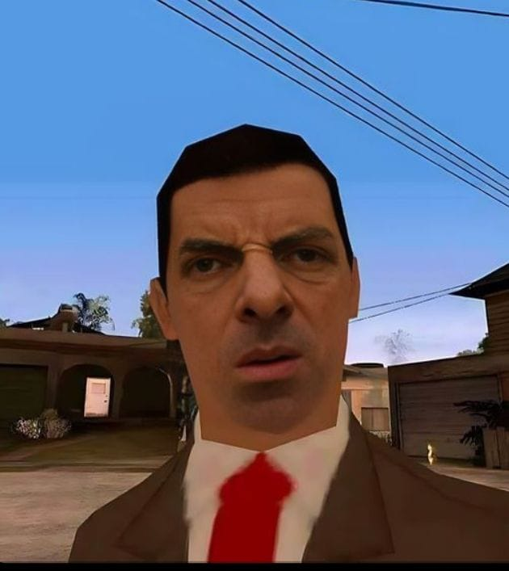
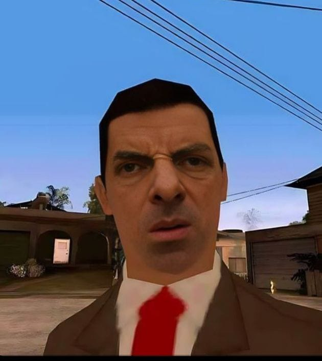

Tentang Saya
Saya adalah mahasiswa yang tertarik pada pengembangan web.
Keahlian
- HTML, CSS, JavaScript
- Python Dasar
Proyek
- Website Portofolio
- To-Do List App
Kontak
Email: adityofebruansyah@email.com
GitHub: github.com/adityofebruansyah

Mahasiswa Unpam | Web Developer Pemula

Saya adalah mahasiswa yang tertarik pada pengembangan web.
Email: adityofebruansyah@email.com
GitHub: github.com/adityofebruansyah